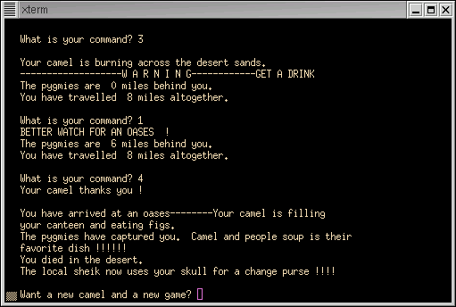

File : camel.bush

#!/usr/local/bin/bush
-- CAMEL
--
-- Originally written in BASIC by David Ahl, Creative Computing
-- From his book 'BASIC COmputer Games'
-- At last check, Dave is at http://www.swapmeetdave.com
--
-- BUSH port by Ken O. Burtch
-- March 2003
pragma restriction( no_external_commands );
reply : character;
thirst : integer := 4; -- commands until dying by thirst
canteen : natural := 6; -- drinks left, start with 6
dist : integer := 0; -- distance travelled
pdist : integer := 0; -- distance pygmies travelled
pdelay : natural := 0; -- pygmy delay
camel : integer := 0; -- camel health
scene : positive;
type a_player_status is (alive, captured, dead, won);
status : a_player_status := alive;
put_line( "CAMEL" );
put_line( "Originally by David Ahl, Creative Computing" );
new_line;
put( "WOUD YOU LIKE INSTRUCTIONS? (Y/N) " );
reply := inkey;
put_line( reply );
if reply = 'y' or reply = 'Y' then
put_line( " Welcome to Camel. The object is to travel 200 miles" );
put_line( "across the great GOBI Desert." );
put_line( "A tribe of knocked keed pygmies will be chasing you. You will" );
put_line( "be asked for commands every so often." );
new_line;
put_line( "C O M M A N D S :" );
put_line( "1# Drink form your canteen" );
put_line( "2# Ahead modrate speed" );
put_line( "3# ahead full speed" );
put_line( "4# stop for the night" );
put_line( "5# Status check" );
put_line( "6# Hope for help" );
new_line;
put_line( "You have one quart of water which will last you six drinks." );
put_line( "You must renew your water supply completely at an oases." );
put_line( "You get a half a quart if found by help." );
put_line( "If help does not find you after command six, you lose." );
end if;
put_line( "Good luck and good cameling!!!" );
new_line;
put_line("You are in the middle of the desert at an oasis." );
loop
loop
if reply /= '5' then -- didn't move on status
thirst := @-1;
if thirst = 1 then
put_line( "-------------------W A R N I N G------------GET A DRINK" );
elsif thirst < 0 then
put_line( "You ran out of water......sorry chum!!!" );
status := dead;
end if;
pdelay := @+1;
if pdelay > 3 then
pdist := @+integer(numerics.rnd(10))-1;
if pdist >= dist then
put_line( "The pygmies have captured you. Camel and people soup is their" );
put_line( "favorite dish !!!!!!" );
status := dead;
end if;
end if;
end if;
if status /= dead then
put( "The pygmies are " );
put( pdist );
put_line( " miles behind you." );
put( "You have travelled " );
put( dist );
put_line( " miles altogether." );
end if;
if status = captured then
new_line;
put_line( "You have a new choice of sub-commands:" );
put_line( "#1 TAKE A DRINK" );
put_line( "#7 ATTEMPT AN ESCAPE" );
put_line( "#8 WAIT FOR PAYMENT" );
put_line( "Your sub-command? " );
reply := inkey;
put_line( reply );
case reply is
when '1' =>
canteen := @-1;
when '7' =>
if numerics.rnd(2) = 1 then
put_line( "CONGRADULATIONS, YOU SUCCESSFULLY ESCAPED!!!!!!!!" );
status := alive;
else
put_line( "You were mortally wounded by a pig stabber while escaping." );
status := dead;
end if;
when '8' =>
if numerics.rnd(4) = 1 then
put_line( "Your ransom has been paid and you are free to go." );
status := alive;
else
put_line( "The local sultain is collecting......just wait.................." );
end if;
when others => null;
end case;
elsif status = dead then
put_line( "You died in the desert." );
scene := numerics.rnd( 5 );
case scene is
when 1 => put_line( "The National Camel's Union is not attending your funeral!!!" );
when 2 => put_line( "Your body was eaten by vultures and imported canninbals !!!" );
when 3 => put_line( "The local sheik now uses your skull for a change purse !!!!" );
when 4 => put_line( "People with little intellegence should stay out of the desert!" );
when 5 => put_line( "TURKEYS SHOULD FLY, NOT RIDE CAMELS !!!!!!!!!!!!!!!!!!!!!!" );
when others =>
put( "error: unexpected scene: '" );
put( scene );
put_line( "'" );
end case;
exit;
elsif status = won then
put_line( "You win, a party is being given in your honor............" );
put_line( "............The pygmies are planning to attend..............." );
exit;
else
new_line;
put( "What is your command? " );
reply := inkey;
put_line( reply );
case reply is
when '1' =>
if canteen = 0 then
put_line( "The canteen is empty" );
else
thirst := 4;
canteen := @-1;
put_line( "BETTER WATCH FOR AN OASES !" );
end if;
when '2' =>
camel := @+1;
if camel > 7 then
status := dead;
put_line( "You dirty rapscallion! You ran your poor camel to DEATH!!" );
else
dist := @+integer(numerics.rnd(10));
put_line( "Your camel likes this pace." );
end if;
when '3' =>
camel := @+3;
if camel > 7 then
status := dead;
put_line( "You dirty rapscallion! You ran your poor camel to DEATH!!" );
else
dist := @+2*integer(numerics.rnd(10));
new_line;
put_line( "Your camel is burning across the desert sands." );
end if;
when '4' =>
camel := 0;
put_line( "Your camel thanks you !" );
when '5' =>
put( "Your camel has " );
put( 7-camel );
put_line( " good days left." );
put( "You have " );
put( canteen );
put_line( " drinks left in your canteen." );
put( "You can go " );
put( thirst );
put_line( " commands without drinking." );
when '6' =>
if numerics.rnd(10) = 1 then
thirst := 4;
canteen := 3;
put_line( "Help has found you in a state of unconsciousness." );
else
status := dead;
end if;
when others => null;
end case;
if status = alive and reply /= '5' then
scene := numerics.rnd( 1000 );
if scene in 1..50 then
new_line;
put_line( "WILD BERBERS HIDDEN IN THE SAND HAVE CAPTURED YOU." );
put_line( "Luckily the local sheik has agreed to their ransom" );
put_line( "demands.....but........watch for the pygmies!!!!!!" );
status := captured;
elsif scene in 51..240 then
thirst := 4;
canteen := 6;
new_line;
put_line( "You have arrived at an oases--------Your camel is filling " );
put_line( "your canteen and eating figs." );
elsif scene in 241..277 then
dist := @+integer(numerics.rnd(19)-10);
new_line;
put_line( "You have been caught in a sandstorm......GOOD LUCK!" );
put( "Your new postion is " );
put( dist );
put_line( " miles so far!" );
elsif scene in 278..312 then
pdist := @+1;
new_line;
put_line( "Your camel hurt his hump." );
put_line( "Luckily the pygmies were footweary !!!" );
end if;
end if;
end if;
end loop;
new_line;
put( "Want a new camel and a new game? " );
reply := inkey;
put_line( reply );
if reply = 'y' or reply = 'Y' then
thirst := 4;
canteen := 6;
dist := 0;
pdist := 0;
pdelay := 0;
camel := 0;
status := alive;
else
put( "------------------" );
put( " CHICKEN " );
put_line( "------------------" );
exit;
end if;
end loop;
command_line.set_exit_status( 0 );